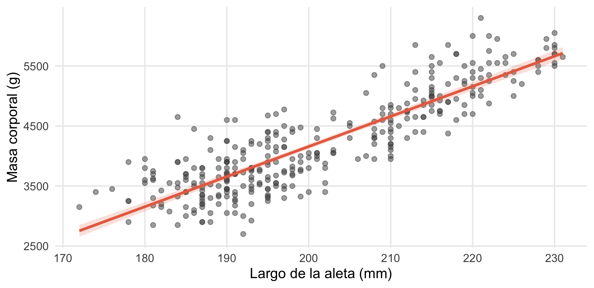
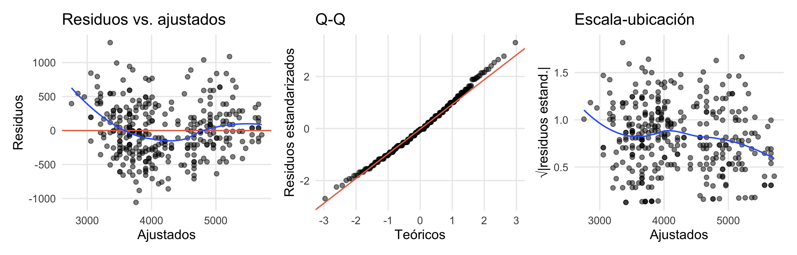
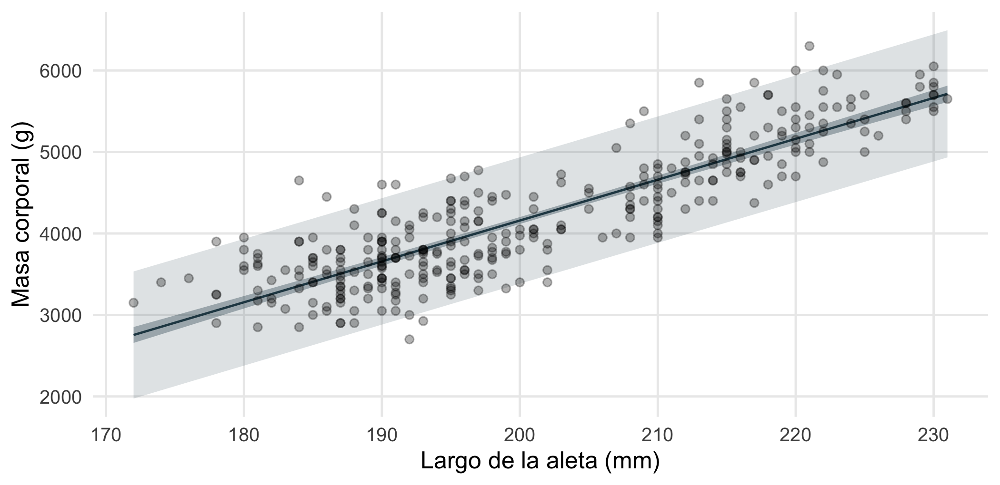
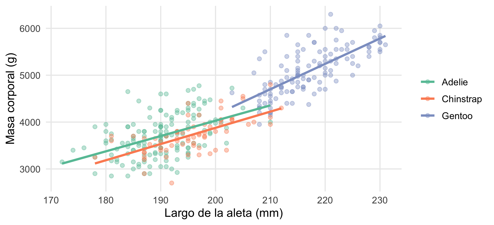
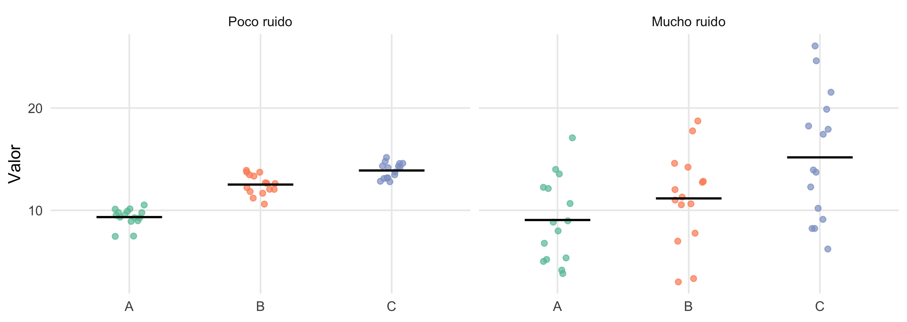
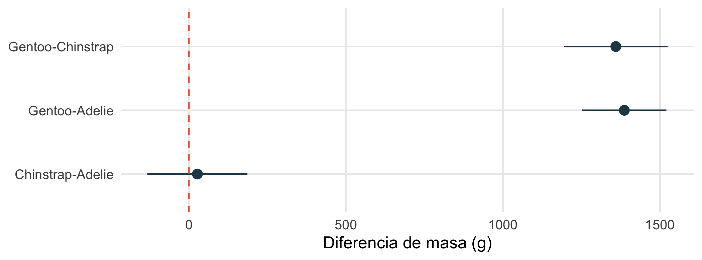
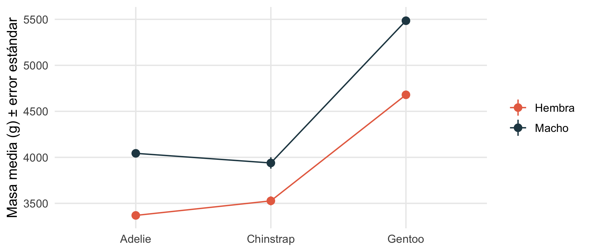

library(tidyverse)
library(palmerpenguins)
library(broom)
library(car) # Levene, VIF, ANOVA tipo II/III
library(emmeans) # medias marginales y comparaciones
library(patchwork)
set.seed(2026)
theme_set(theme_minimal(base_size = 12) + theme(panel.grid.minor = element_blank()))
pd <- penguins |> drop_na(body_mass_g, flipper_length_mm, sex)Regresión lineal y ANOVA
Minicurso de R · Módulo 5
R
regresión
ANOVA
modelos lineales
Modelos lineales, diagnósticos, predicción, ANOVA de una y dos vías, pruebas post hoc y medias marginales, con la teoría de la partición de la varianza.
Objetivos de aprendizaje
Al terminar este cuaderno podrás:
- Ajustar e interpretar una regresión lineal simple y múltiple con
lm(). - Diagnosticar un modelo revisando sus supuestos con gráficos de residuos.
- Generar predicciones con intervalos de confianza y de predicción.
- Explicar el ANOVA como partición de la varianza y aplicar el de una y dos vías.
- Hacer comparaciones post hoc y calcular medias marginales con
emmeans. - Comparar modelos con AIC y pruebas F.
1. Teoría: el modelo lineal
Un modelo lineal explica una variable respuesta \(y\) como una combinación lineal de predictores más un error:
\[ y_i = \beta_0 + \beta_1 x_{1i} + \dots + \beta_p x_{pi} + \varepsilon_i, \qquad \varepsilon_i \sim N(0, \sigma^2) \]
Los coeficientes \(\beta\) se estiman por mínimos cuadrados: se elige la recta que minimiza la suma de los cuadrados de los residuos (las distancias verticales entre los datos y la recta). Los supuestos, que hay que revisar, son:
- Linealidad: la relación entre predictores y \(y\) es lineal.
- Independencia de los errores.
- Normalidad de los residuos.
- Homocedasticidad: la varianza de los residuos es constante.
(La normalidad se aplica a los residuos, no a la variable \(y\).)
2. Regresión lineal simple
¿Cuánto aumenta la masa de un pingüino por cada milímetro adicional de aleta?
m1 <- lm(body_mass_g ~ flipper_length_mm, data = pd)
summary(m1)
Call:
lm(formula = body_mass_g ~ flipper_length_mm, data = pd)
Residuals:
Min 1Q Median 3Q Max
-1057.33 -259.79 -12.24 242.97 1293.89
Coefficients:
Estimate Std. Error t value Pr(>|t|)
(Intercept) -5872.09 310.29 -18.93 <2e-16 ***
flipper_length_mm 50.15 1.54 32.56 <2e-16 ***
---
Signif. codes: 0 '***' 0.001 '**' 0.01 '*' 0.05 '.' 0.1 ' ' 1
Residual standard error: 393.3 on 331 degrees of freedom
Multiple R-squared: 0.7621, Adjusted R-squared: 0.7614
F-statistic: 1060 on 1 and 331 DF, p-value: < 2.2e-16Cómo leer el resultado:
- Intercepto: masa esperada cuando la aleta mide 0 mm (aquí no tiene sentido físico, solo ancla la recta).
- Pendiente (
flipper_length_mm): cada milímetro extra de aleta se asocia con un aumento medio de la masa de unos 50 g. - \(R^2\): fracción de la variabilidad de la masa explicada por la aleta.
- Error estándar residual: desviación típica de los errores, en gramos.
broom devuelve estos resultados como tablas fáciles de manipular:
tidy(m1, conf.int = TRUE)# A tibble: 2 × 7
term estimate std.error statistic p.value conf.low conf.high
<chr> <dbl> <dbl> <dbl> <dbl> <dbl> <dbl>
1 (Intercept) -5872. 310. -18.9 1.18e- 54 -6482. -5262.
2 flipper_length_mm 50.2 1.54 32.6 3.13e-105 47.1 53.2glance(m1) |> select(r.squared, adj.r.squared, sigma, AIC, nobs)# A tibble: 1 × 5
r.squared adj.r.squared sigma AIC nobs
<dbl> <dbl> <dbl> <dbl> <int>
1 0.762 0.761 393. 4928. 333ggplot(pd, aes(flipper_length_mm, body_mass_g)) +
geom_point(alpha = 0.5, colour = "grey30") +
geom_smooth(method = "lm", colour = "#e76f51", fill = "#e76f51", alpha = 0.2) +
labs(x = "Largo de la aleta (mm)", y = "Masa corporal (g)")
Diagnóstico de los supuestos
Con augment() se obtienen los valores ajustados y los residuos para dibujar los gráficos de diagnóstico:
d <- augment(m1)
g1 <- ggplot(d, aes(.fitted, .resid)) + geom_point(alpha = 0.5) +
geom_hline(yintercept = 0, colour = "#e76f51") + geom_smooth(se = FALSE, method = "loess", formula = y ~ x, linewidth = 0.6) +
labs(x = "Ajustados", y = "Residuos", title = "Residuos vs. ajustados")
g2 <- ggplot(d, aes(sample = .std.resid)) + stat_qq(alpha = 0.5) + stat_qq_line(colour = "#e76f51") +
labs(x = "Teóricos", y = "Residuos estandarizados", title = "Q-Q")
g3 <- ggplot(d, aes(.fitted, sqrt(abs(.std.resid)))) + geom_point(alpha = 0.5) +
geom_smooth(se = FALSE, method = "loess", formula = y ~ x, linewidth = 0.6) +
labs(x = "Ajustados", y = "√|residuos estand.|", title = "Escala-ubicación")
g1 | g2 | g3
Además de los gráficos, los puntos influyentes (que cambian mucho el ajuste si se quitan) se detectan con la distancia de Cook:
augment(m1) |>
mutate(fila = row_number()) |>
slice_max(.cooksd, n = 3) |>
select(fila, body_mass_g, flipper_length_mm, .cooksd)# A tibble: 3 × 4
fila body_mass_g flipper_length_mm .cooksd
<int> <int> <int> <dbl>
1 35 4650 184 0.0407
2 164 6300 221 0.0357
3 27 3900 178 0.0262
TipSi un supuesto falla
- Curvatura en los residuos: agrega un término cuadrático (
poly(x, 2)) o usa un GAM (Módulo 7). - Varianza creciente con el valor ajustado: transforma la respuesta (
log(y)) o usa modelos que permitan varianzas distintas. - Residuos no normales con muestras grandes: el modelo es robusto; con muestras pequeñas, transforma o usa bootstrap.
- Dependencia entre observaciones (mismos individuos, sitios repetidos): usa modelos mixtos (Módulo 6).
Predicción
Hay dos intervalos distintos: el de confianza (incertidumbre sobre la media de \(y\) para un valor de \(x\)) y el de predicción (incertidumbre sobre una observación individual, siempre más ancho).
nuevo <- tibble(flipper_length_mm = seq(172, 231, length.out = 100))
pred <- bind_cols(nuevo,
as_tibble(predict(m1, nuevo, interval = "confidence")) |> rename(ic_inf = lwr, ic_sup = upr),
as_tibble(predict(m1, nuevo, interval = "prediction")) |> select(ip_inf = lwr, ip_sup = upr))
ggplot(pred, aes(flipper_length_mm)) +
geom_ribbon(aes(ymin = ip_inf, ymax = ip_sup), fill = "#264653", alpha = 0.15) +
geom_ribbon(aes(ymin = ic_inf, ymax = ic_sup), fill = "#264653", alpha = 0.35) +
geom_line(aes(y = fit), colour = "#264653") +
geom_point(data = pd, aes(y = body_mass_g), alpha = 0.3) +
labs(x = "Largo de la aleta (mm)", y = "Masa corporal (g)")
predict(m1, tibble(flipper_length_mm = 200), interval = "prediction") fit lwr upr
1 4158.561 3383.626 4933.495
3. Regresión múltiple
Con varios predictores, cada coeficiente se interpreta manteniendo los demás constantes. Agreguemos la especie (categórica) y el sexo:
m2 <- lm(body_mass_g ~ flipper_length_mm + species + sex, data = pd)
tidy(m2, conf.int = TRUE) |> mutate(across(where(is.numeric), \(x) round(x, 2)))# A tibble: 5 × 7
term estimate std.error statistic p.value conf.low conf.high
<chr> <dbl> <dbl> <dbl> <dbl> <dbl> <dbl>
1 (Intercept) -366. 532. -0.69 0.49 -1412. 681.
2 flipper_length_mm 20.0 2.85 7.04 0 14.4 25.6
3 speciesChinstrap -87.6 46.4 -1.89 0.06 -179. 3.54
4 speciesGentoo 836. 85.2 9.82 0 669. 1004.
5 sexmale 530. 37.8 14.0 0 456 605. Las variables categóricas se codifican con variables indicadoras respecto a un nivel de referencia (aquí Adelie y female). Así, el coeficiente de sexmale es la diferencia media entre machos y hembras de la misma especie y con la misma aleta.
Multicolinealidad
Si los predictores están muy correlacionados entre sí, los coeficientes se vuelven inestables. Se mide con el factor de inflación de la varianza (VIF); valores mayores que 5–10 son señal de alerta:
vif(m2) GVIF Df GVIF^(1/(2*Df))
flipper_length_mm 6.045957 1 2.458853
species 5.653123 2 1.541956
sex 1.362260 1 1.167159Aquí la aleta y la especie tienen un VIF cercano a 6: es esperable, porque las especies difieren en tamaño y por eso la aleta y la especie comparten información. Es un valor moderado, pero conviene interpretar esos dos coeficientes con cautela.
Comparar modelos
Con la prueba F se compara un modelo con otro anidado y con el criterio de Akaike (AIC) se compara cualquier grupo de modelos (menor AIC = mejor equilibrio entre ajuste y complejidad):
m0 <- lm(body_mass_g ~ 1, data = pd)
m3 <- lm(body_mass_g ~ flipper_length_mm * species + sex, data = pd) # con interacción
anova(m1, m2, m3)Analysis of Variance Table
Model 1: body_mass_g ~ flipper_length_mm
Model 2: body_mass_g ~ flipper_length_mm + species + sex
Model 3: body_mass_g ~ flipper_length_mm * species + sex
Res.Df RSS Df Sum of Sq F Pr(>F)
1 331 51211963
2 328 28653568 3 22558395 86.8892 < 2e-16 ***
3 326 28212325 2 441243 2.5493 0.07969 .
---
Signif. codes: 0 '***' 0.001 '**' 0.01 '*' 0.05 '.' 0.1 ' ' 1AIC(m0, m1, m2, m3) df AIC
m0 2 5404.291
m1 3 4928.146
m2 6 4740.774
m3 8 4739.606Un efecto de interacción (*) permite que la pendiente cambie según el grupo:
ggplot(pd, aes(flipper_length_mm, body_mass_g, colour = species)) +
geom_point(alpha = 0.4) +
geom_smooth(method = "lm", se = FALSE) +
scale_colour_brewer(palette = "Set2", name = NULL) +
labs(x = "Largo de la aleta (mm)", y = "Masa corporal (g)")
4. Teoría: el ANOVA como partición de la varianza
El análisis de varianza (ANOVA) compara las medias de tres o más grupos. Su idea es descomponer la variabilidad total de los datos en dos partes:
\[ \underbrace{SS_{total}}_{\text{variación total}} = \underbrace{SS_{entre}}_{\text{entre grupos}} + \underbrace{SS_{dentro}}_{\text{dentro de grupos}} \]
El estadístico \(F\) compara ambas fuentes, ajustadas por sus grados de libertad:
\[ F = \frac{SS_{entre}/(k-1)}{SS_{dentro}/(N-k)} \]
Si las medias de los grupos fueran iguales (\(H_0\)), la variación entre grupos sería similar a la variación dentro de ellos y \(F \approx 1\). Un \(F\) grande indica que al menos un grupo difiere de los demás.
Note¿Por qué no hacer varias pruebas t?
Con 3 grupos habría 3 pruebas t; con 6 grupos, 15. Cada prueba adicional infla la probabilidad de un falso positivo. El ANOVA hace una sola prueba global; después se hacen las comparaciones por pares con corrección.
Lo vemos con dos escenarios simulados: con las mismas medias de grupo pero con más o menos ruido dentro de los grupos:
sim_anova <- function(sd_dentro) {
tibble(grupo = rep(c("A", "B", "C"), each = 15),
y = rnorm(45, mean = rep(c(10, 12, 14), each = 15), sd = sd_dentro))
}
bind_rows(mutate(sim_anova(1), caso = "Poco ruido"), mutate(sim_anova(5), caso = "Mucho ruido")) |>
mutate(caso = fct_inorder(caso)) |>
ggplot(aes(grupo, y, colour = grupo)) +
geom_jitter(width = 0.12, alpha = 0.7) +
stat_summary(fun = mean, geom = "crossbar", width = 0.5, colour = "black", linewidth = 0.3) +
scale_colour_brewer(palette = "Set2", guide = "none") +
facet_wrap(~ caso) +
labs(x = NULL, y = "Valor")
5. ANOVA de una vía
¿La masa corporal difiere entre las tres especies de pingüinos?
m_aov <- aov(body_mass_g ~ species, data = pd)
summary(m_aov) Df Sum Sq Mean Sq F value Pr(>F)
species 2 145190219 72595110 341.9 <2e-16 ***
Residuals 330 70069447 212332
---
Signif. codes: 0 '***' 0.001 '**' 0.01 '*' 0.05 '.' 0.1 ' ' 1El \(F\) es muy grande y el valor p diminuto: al menos una especie difiere en masa. Para saber cuáles, se usan comparaciones por pares que corrigen por múltiples pruebas, como la prueba de Tukey:
TukeyHSD(m_aov) Tukey multiple comparisons of means
95% family-wise confidence level
Fit: aov(formula = body_mass_g ~ species, data = pd)
$species
diff lwr upr p adj
Chinstrap-Adelie 26.92385 -132.3528 186.2005 0.916431
Gentoo-Adelie 1386.27259 1252.2897 1520.2554 0.000000
Gentoo-Chinstrap 1359.34874 1194.4304 1524.2671 0.000000tidy(TukeyHSD(m_aov)) |>
ggplot(aes(estimate, contrast)) +
geom_pointrange(aes(xmin = conf.low, xmax = conf.high), colour = "#264653") +
geom_vline(xintercept = 0, linetype = 2, colour = "#e76f51") +
labs(x = "Diferencia de masa (g)", y = NULL)
Supuestos del ANOVA
Son los mismos que los de la regresión, aplicados a los residuos: normalidad, homogeneidad de varianzas e independencia.
shapiro.test(residuals(m_aov))
Shapiro-Wilk normality test
data: residuals(m_aov)
W = 0.9922, p-value = 0.07835leveneTest(body_mass_g ~ species, data = pd) # homogeneidad de varianzasLevene's Test for Homogeneity of Variance (center = median)
Df F value Pr(>F)
group 2 5.1349 0.006367 **
330
---
Signif. codes: 0 '***' 0.001 '**' 0.01 '*' 0.05 '.' 0.1 ' ' 1En este caso Levene detecta varianzas distintas entre especies (\(p = 0.006\)). Si las varianzas no son homogéneas, usa el ANOVA de Welch (oneway.test(..., var.equal = FALSE)) y si además falla la normalidad con muestras pequeñas la alternativa no paramétrica, la prueba de Kruskal-Wallis. Aquí ambas llevan a la misma conclusión que el ANOVA clásico:
oneway.test(body_mass_g ~ species, data = pd) # Welch
One-way analysis of means (not assuming equal variances)
data: body_mass_g and species
F = 316.5, num df = 2.00, denom df = 187.68, p-value < 2.2e-16kruskal.test(body_mass_g ~ species, data = pd) # no paramétrica
Kruskal-Wallis rank sum test
data: body_mass_g by species
Kruskal-Wallis chi-squared = 212.09, df = 2, p-value < 2.2e-166. ANOVA de dos vías e interacción
Cuando hay dos factores, además de sus efectos principales interesa su interacción: si el efecto de un factor depende del nivel del otro.
m_dos <- lm(body_mass_g ~ species * sex, data = pd)
Anova(m_dos, type = "II") # tipo II: recomendable cuando los grupos tienen tamaños distintosAnova Table (Type II tests)
Response: body_mass_g
Sum Sq Df F value Pr(>F)
species 143401584 2 749.016 < 2.2e-16 ***
sex 37090262 1 387.460 < 2.2e-16 ***
species:sex 1676557 2 8.757 0.0001973 ***
Residuals 31302628 327
---
Signif. codes: 0 '***' 0.001 '**' 0.01 '*' 0.05 '.' 0.1 ' ' 1pd |>
group_by(species, sex) |>
summarise(media = mean(body_mass_g), ee = sd(body_mass_g) / sqrt(n()), .groups = "drop") |>
ggplot(aes(species, media, colour = sex, group = sex)) +
geom_line() +
geom_pointrange(aes(ymin = media - ee, ymax = media + ee), size = 0.5) +
scale_colour_manual(values = c(female = "#e76f51", male = "#264653"), labels = c("Hembra", "Macho"), name = NULL) +
labs(x = NULL, y = "Masa media (g) ± error estándar")
Medias marginales estimadas y comparaciones
emmeans calcula las medias del modelo y hace las comparaciones que interesan con corrección automática:
em <- emmeans(m_dos, ~ sex | species)
emspecies = Adelie:
sex emmean SE df lower.CL upper.CL
female 3369 36.2 327 3298 3440
male 4043 36.2 327 3972 4115
species = Chinstrap:
sex emmean SE df lower.CL upper.CL
female 3527 53.1 327 3423 3632
male 3939 53.1 327 3835 4043
species = Gentoo:
sex emmean SE df lower.CL upper.CL
female 4680 40.6 327 4600 4760
male 5485 39.6 327 5407 5563
Confidence level used: 0.95 pairs(em) # macho - hembra dentro de cada especiespecies = Adelie:
contrast estimate SE df t.ratio p.value
female - male -675 51.2 327 -13.174 <0.0001
species = Chinstrap:
contrast estimate SE df t.ratio p.value
female - male -412 75.0 327 -5.487 <0.0001
species = Gentoo:
contrast estimate SE df t.ratio p.value
female - male -805 56.7 327 -14.188 <0.0001emmeans(m_dos, pairwise ~ species, adjust = "tukey")$contrasts contrast estimate SE df t.ratio p.value
Adelie - Chinstrap -26.9 45.4 327 -0.593 0.8241
Adelie - Gentoo -1376.1 38.2 327 -36.007 <0.0001
Chinstrap - Gentoo -1349.2 47.0 327 -28.682 <0.0001
Results are averaged over the levels of: sex
P value adjustment: tukey method for comparing a family of 3 estimates Ejercicios
- Regresión. Ajusta
lm(bill_length_mm ~ body_mass_g, data = penguins). Interpreta la pendiente y el \(R^2\). ¿Se cumplen los supuestos? - Múltiple. Agrega
speciesal modelo anterior. ¿Cambia el coeficiente debody_mass_g? ¿Por qué? - Predicción. Con el modelo
m1, calcula el IC de predicción del 95 % para un pingüino de aleta 190 mm. ¿Es más ancho que el IC de la media? ¿Por qué? - ANOVA. Compara el largo de la aleta entre islas con un ANOVA de una vía. Verifica supuestos y haz Tukey.
- Interacción. ¿Hay interacción entre
speciesyislandsobre la masa? Nota: no todas las combinaciones existen; revisa contable().
NoteSoluciones sugeridas
# 1 y 2
a <- lm(bill_length_mm ~ body_mass_g, data = penguins)
b <- lm(bill_length_mm ~ body_mass_g + species, data = penguins)
rbind(simple = coef(a)["body_mass_g"], con_especie = coef(b)["body_mass_g"]) body_mass_g
simple 0.004051417
con_especie 0.003748497# La pendiente baja levemente (de 0,0041 a 0,0037 mm/g, cerca de un 7 %): sin la especie,
# la masa "absorbe" parte de las diferencias de pico entre especies.
# 3
predict(m1, tibble(flipper_length_mm = 190), interval = "confidence") fit lwr upr
1 3657.028 3603.157 3710.899predict(m1, tibble(flipper_length_mm = 190), interval = "prediction") fit lwr upr
1 3657.028 2881.387 4432.669# 4
a4 <- aov(flipper_length_mm ~ island, data = penguins)
summary(a4); TukeyHSD(a4) Df Sum Sq Mean Sq F value Pr(>F)
island 2 25352 12676 102.1 <2e-16 ***
Residuals 339 42075 124
---
Signif. codes: 0 '***' 0.001 '**' 0.01 '*' 0.05 '.' 0.1 ' ' 1
2 observations deleted due to missingness Tukey multiple comparisons of means
95% family-wise confidence level
Fit: aov(formula = flipper_length_mm ~ island, data = penguins)
$island
diff lwr upr p adj
Dream-Biscoe -16.634006 -19.742902 -13.525110 0.0000000
Torgersen-Biscoe -18.510508 -22.706298 -14.314719 0.0000000
Torgersen-Dream -1.876502 -6.239167 2.486163 0.5694419# 5
table(penguins$species, penguins$island)
Biscoe Dream Torgersen
Adelie 44 56 52
Chinstrap 0 68 0
Gentoo 124 0 0Para profundizar
- Fox, J. y Weisberg, S. (2019). An R Companion to Applied Regression (3.ª ed.). Sage.
- Gelman, A., Hill, J. y Vehtari, A. (2020). Regression and Other Stories. Cambridge University Press.
- Zuur, A. F., Ieno, E. N. y Elphick, C. S. (2010). A protocol for data exploration to avoid common statistical problems. Methods in Ecology and Evolution, 1(1), 3–14.
- Lenth, R. V. Documentación de emmeans.